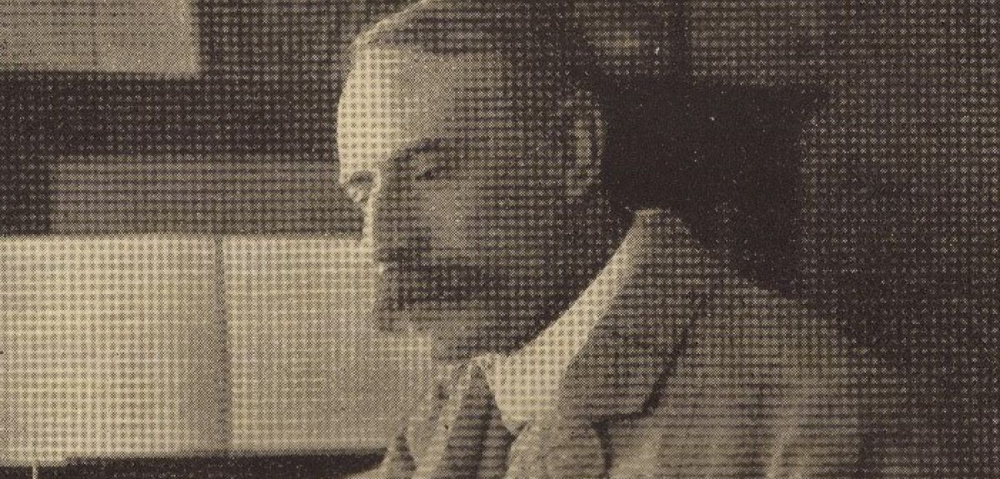

<!DOCTYPE html>
<html>
    <head>
        <title>University of Oxford</title>
        <link rel="stylesheet" type="text/css" href="tampilan oxford.css">
        <meta name="viewport" content="width=device-width, initial-scale=1">
    </head>
</html>

<body bgcolor="white">
    <header>
        <div class="uni"></div>
        <div class="homepage">NEWS 2</div>
    </header>


    <nav>
        <div class="menu-bar">
        <ul>
          <li><a href="index.html">Homepage</a></li>
          <li id="menu-products">
            <button onclick="myFunction()" class="dropbtn">About ▼</button>
            <ul id="dropdown-products">
                <div id="myDropdown" class="dropdown-content">
              <li><a href="OrganisationsOxClar.html">Organisation</a></li>
              <li><a href="牛津大学Clar.html">牛津大学</a></li>
              <li><a href="InternationalOxfordClar.html">International Oxford</a></li>
            </div>
            </ul>
          </li>
          <li><a href="ResearchClar.html">Research</a></li>
        </ul>
        </div>
      </nav>


    <script>
        function myFunction() {
            document.getElementById("myDropdown").classList.toggle("show");
        }

        window.onclick = function(event) {
  if (!event.target.matches('.dropbtn')) {
    var dropdowns = document.getElementsByClassName("dropdown-content");
    var i;
    for (i = 0; i < dropdowns.length; i++) {
      var openDropdown = dropdowns[i];
      if (openDropdown.classList.contains('show')) {
        openDropdown.classList.remove('show');
      }
    }
  }
}
    </script>
<div class="el"></div>
<div id="">
<div class="org">Pioneering digital technology to examine musical themes of England’s most celebrated composer</div>
<div class="naur">Experts from the University of Oxford and Birmingham City University’s Royal Birmingham Conservatoire (RBC) will use pioneering new technology to analyse the themes of classical music titan, Sir Edward Elgar, and understand its meanings.</div>
<div class="line"></div>
<div class="nose">Elgar is famous for works such as the ‘Enigma’ Variations and The Dream of Gerontius, which display the thematic richness his compositions are known for.</div>

<div class="nose">'We will use cutting-edge digital tools to share this important knowledge with the public,' explains Professor Daniel Grimley from the University of Oxford.</div>

<div class="nose">'It will transform the way listeners, academics, and performers think about musical themes.'</div>

<div class="nose">Themes have historically been a fundamental element of music criticism yet, in recent years, serious musicological study of them has been marginalised.</div>

<div class="nose">This project is part of ongoing collaboration between Oxford’s Faculty of Music and the Oxford e-Research Centre to revitalise the study of musical themes through digital methods.</div>

<div class="nose">It will explore how Elgar associated themes with times, places, people, and emotions, offering new insights into his life, relationships, and creative process.</div>

<div class="nose">'Generations of listeners will gain new insights into what makes Elgar’s music so meaningful,' added Dr Joanna Bullivant, Birmingham City University (BCU) project co-lead.</div>

<div class="nose">Crucial funding from the Leverhulme Trust will be used to create a comprehensive digital resource that traces connections between multimedia sources and explores themes across Elgar’s body of work. This cutting-edge approach promises to reframe thematic analysis as a key musicological discipline.</div>

<div class="nose">'Traditionally, themes are examined in a single work,' said Dr Bullivant, who is an expert in 19th and 20th century British music.</div>

<div class="nose">'This technology will allow us to follow themes across many works, sources, places, and people. These findings will be shared with the public using a brand-new digital resource.'</div>

<div class="nose">The University of Oxford and BCU have also partnered with the National Trust – curators of Elgar's birthplace museum in Worcestershire – the British Library, and Elgar Works, connecting a range of experts to deepen our understanding of Elgar’s musical legacy.</div>

<div class="nose">'This project could become a blueprint for how to connect music to historic places like National Trust properties, in a way that will engage the public when they visit,' said Dr Bullivant.</div>

<div class="nose">The outcome will include an online thematic catalogue, an integrated toolkit for music analysis, and scholarly publications that aim to set a new standard in digital musicology.</div>

</div>
<div class="inv">.</div>

<footer>
  <div class="rama">CONNECT WITH US</div>
  <div class="mam">
      <a href="https://www.youtube.com/@oxforduniversity"></a></div>
  <div class="mam">
      <a href="https://www.instagram.com/oxford_uni/"></a></div>
  <p>&copy; 2024 - University of Oxford</p>
</footer>